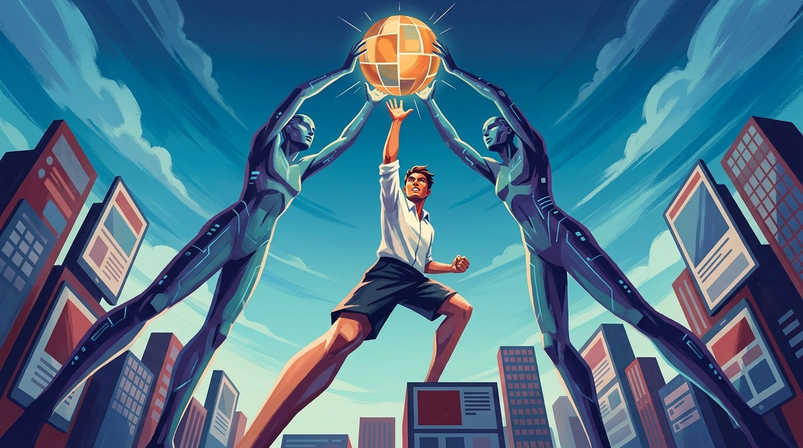

Seven Trends Reshaping Design
The AI on your team will execute everything and decide nothing. Here are the seven shifts that follow.
 Nadim A. Massih14 June 2026 · 8 min read
Nadim A. Massih14 June 2026 · 8 min read
AI is not replacing creative people. It is wiping out the routine, hands-on middle of every creative job, and handing the future to whoever decides what is good.
AI is not coming for creative jobs. It is coming for the middle of them. Think of today's AI as the fastest junior you will ever hire: it executes anything in seconds, never tires, never pushes back, and never once asks why the work exists. That quietly empties the routine out of design, web, advertising and video, and pushes the money toward the two things a machine still cannot do. Here is where it goes over the next three years, and how to end up on the right side of the line.
Coca-Cola's 2025 holiday film was made in about two months instead of the usual year, and the company happily called it faster and cheaper than a normal campaign. It was also widely panned as soulless. Both things are true at once, and the gap between them is the whole forecast that follows.
The machine did the work. It rendered the snow, the trucks, the warm light, the faces. What it could not do was decide whether any of it was good, or whether it should have looked like that at all. That decision is the part people noticed was missing.
Strip away the spectacle and the same pattern shows up everywhere. AI does the work, and it has no idea why the work exists or whether it is any good. It is the fastest junior you will ever hire, and a junior who moves at the speed of light still needs someone to point at the right problem and someone to say "not like that." What follows are seven forecasts for the next three years. They are really one forecast told seven ways: the routine middle of creative work is collapsing, and the money is moving to the two ends the junior can never fill.
1. The grunt work falls to almost nothing
Within three years, the grunt work of creative production will be close to free. The resizing and reformatting, the stock images and the banner sets, the first-draft layout and the tenth version of the same ad: by 2028 a machine will do all of it for almost nothing. Klarna saw it coming early. Back in 2024 the payments firm cut the time it took to produce a marketing image from six weeks to seven days, and trimmed its agency bill by a quarter.
When a task gets that cheap, the jobs built on it start to move. One analysis of 180 million postings found listings for computer-graphic artists down by a third in 2025, even as demand for creative directors held up; that same year, for the first time, the World Economic Forum's employers put graphic design on their list of fastest-shrinking jobs. This is a split, though, not a wipeout. Official figures still show overall design employment roughly flat, with web and digital design growing about 7% over the decade. The people are not disappearing. They are sliding from the cheap end of the work toward the thinking end. Which is the first piece of advice the next three years will hand you: stop selling the hours. Nobody pays a person for what the junior now does for free, but they will pay, and pay well, for the judgment that decides what is worth making at all.
2. A cleanup economy grows around the mess
Close behind that first wave comes a second, quieter one: a whole economy growing up around the junior's mess. Cleaning up after careless AI is already a real market. On Fiverr, requests to fix and "humanise" AI-generated work jumped 641% in 2025. Designers are hired to redraw the logos the machine botched, and developers to rebuild entire sites thrown together by "vibe coding," the new habit of making software by describing it to an AI in plain words instead of writing it. The trouble is that these things look finished long before they are: one security firm found a known weakness in roughly 45% of AI-written code. The first draft is free. Making it actually work is not.
There is a catch worth naming, though, before anyone rushes to sell repairs. The fixing usually pays less than the original job would have, because the client has already spent the budget on the tool and assumes the patch is small. The real money is not in papering over the machine's output. It is in being the person a client calls to rebuild the thing properly, which is a more senior job than the one the AI replaced. The same hollowing is about to hit whole companies, not just individuals.
3. The all-purpose agency comes apart
By 2028, the agency that did a little of everything will have come apart, squeezed from both sides. The shop built to turn briefs into output at scale was the fastest junior of the old economy, and the contraction at the top is already brutal. WPP shed around 7,000 roles in a single year, and its profit margin slid from 15 percent to 13 percent. Then, at the end of 2025, two of the biggest names in the business, Omnicom and IPG, merged and cut about 4,000 jobs, folding century-old agencies into something larger.
Some of that is just weather: a soft ad market, the usual fat trimmed when two firms become one. But the direction is structural. In one 2026 survey, 87% of agency staff said the traditional model is broken or soon will be, and Forrester expects 15% of agency jobs to vanish in 2026 alone, with the survivors moving from making the work to directing it. The clearest tell is the exception. Publicis, the holding company that leaned hardest into AI, did the opposite of shrinking: it grew, and added thousands of people. When one giant contracts on production while another expands on direction, a down market cannot be the whole story. Over the next three years, safety lives at the edges, with the orchestrator or the specialist. The all-purpose middle is the dangerous place to stand.
4. Video and motion become a prompt
By 2027, video and motion will be just another prompt. A few sentences will conjure footage that once needed a crew, a camera and a month, and the shift is already well underway: by early 2026 several AI models could generate 4K clips with sound that matched the picture, Google's Veo and Kuaishou's Kling among them. Inside Adobe's 2026 tools, jobs that used to cost an editor hours, such as cleanly lifting a moving figure out of a shot, now take seconds, though Adobe is careful to call them a helper rather than a replacement. Brands have noticed. Mondelez says AI is cutting some production costs by up to half, and H&M has built AI "digital twins" of its models so it can scale a campaign without the photoshoot.
The pipeline pays for this in jobs. A 2024 study for the entertainment unions put a number on it: around 204,000 American roles disrupted over three years, roughly a fifth of all film, television and animation work. The cuts have started. Disney shed about 1,000 jobs in April 2026, though the company blamed a thinner slate rather than the machine. Not every creative layoff is its doing, and it is worth remembering that. One warning sits inside the forecast, too. OpenAI's Sora app topped the App Store after it launched in September 2025, then OpenAI wound the same app down about seven months later. New tools will keep arriving with a launch and leaving without a goodbye, so the safe move is to stop operating any single one of them and start directing the whole pipeline. The studio job that survives belongs to the person who decides what the machine makes, not the one pushing its buttons.
5. The mockup dies
The mockup is dying. For thirty years the web designer's deliverable was a picture of a screen, drawn and then handed to someone who would build it, and that middle step is what disappears. The drawing and the working website are now a single prompt apart. Vercel's v0, which assembles a working interface from one sentence, has passed six million users, and Figma's newest tools turn a prompt straight into a prototype. What used to take a designer a day now takes a few seconds, and the usability writer Jakob Nielsen already has a name for where it leads: the "disposable interface," screens conjured on demand for one person and thrown away afterward. The work that remains is not drawing the page. It is building the brand system the machine has to work inside, and deciding where it may not go. The deliverable, in other words, is becoming the rulebook rather than the page.
The first draft is free. Deciding whether it is any good is the whole job now.
6. AI makes the whole ad
The machine is about to make the whole ad, end to end, and the biggest platforms are racing to take the agency out of the loop entirely. By the end of 2026, Meta wants the deal to be this simple: a business hands over a product photo and a budget, and Meta's own AI builds the ad, targets it and runs it. More than four million advertisers already use its AI tools, and Google's version is live and free.
This is where the forecast turns on itself, because infinite cheap advertising creates its own scarcity. The junior never stops producing: by April 2025, 74% of new web pages already carried something a machine had made. When anything at all can be made this way, the rare thing becomes something a person actually believes, and belief is already thinning. Only about a fifth of consumers feel good about AI in advertising, and a third say it makes them less likely to buy. Even the regulators are drawing the line: from August 2026 the European Union will force AI-made content to be labelled, with the sternest marks saved for deepfakes. The cheap part, then, becomes worthless precisely because it is cheap, which is why the winners will stop competing on the output the platforms give away and start building the one thing a machine cannot fake: a name people choose on purpose, and trust enough to keep.
7. Taste and ownership become the paid work
By the end of these three years, the work that reliably pays best is the work the junior cannot do: knowing what is good, and owning what you make. This is where the other six forecasts were always heading, and the biggest tool-makers now say it aloud. Adobe talks about "the rise of the creative director," the moment taste becomes the instrument, and Figma's chief executive argues that once software is easy to make, craft becomes the moat, the thing rivals cannot copy. The freelance market is already voting with its wallet. On Upwork, demand for AI skills has roughly doubled in a year and the freelancers who have those skills charge about 40% more an hour, while the share of new startups with a single founder has climbed from about a quarter in 2019 to more than a third in 2025. The creative who once waited for the brief increasingly writes it, or skips the client and builds the product.
Honesty demands the other side of this, though. The best controlled study so far, drawn from the freelance market, found that AI narrowed the gap between the top earners and the average rather than widening it. Good-enough and cheap can undercut excellent, and the machine's average climbs every year. Taste, then, does not pay just for turning up. It is a bet, and it only pays off if your taste genuinely beats what the machine now produces by default. The work, over the next three years, is to build a point of view worth paying for, and, wherever you can, to own the thing you make rather than rent yourself out to make it.
| The machine | The human |
|---|---|
| Starts every job from scratch | Carries years of context and scar tissue |
| Builds whatever you point it at | Knows why the thing should exist |
| Renders 32 versions in an hour | Says "not like that" 32 times in an hour |
| Answers exactly what you asked | Notices you asked the wrong question |
| Fixes the problem on the screen | Spots the problem that was never on the screen |
| Never pauses, never doubts | Doubts, edits, and decides what matters |
What this is not
It would be easy to read all this as the future arriving exactly on schedule. It will not. Gartner expects more than 40% of "agentic AI" projects, the kind meant to run whole campaigns by themselves, to be cancelled by the end of 2027, and McKinsey found that while 92% of companies plan to spend more on AI, just 1% consider themselves mature at using it. The hype, as ever, is running years ahead of the reality. This forecast can be wrong, too: if the routine creative jobs have stopped shrinking three years from now, it was a false alarm.
Two larger unknowns sit underneath all of it. The courts have not yet settled whether AI-made work can even be owned, or who pays when it copies someone else, and that alone could slow the whole shift down. And there is a hole in the middle of the story. If the junior work is automated, where do the seniors come from? The road to judgment always ran through years of doing the very grunt work the machine now does for free. Nobody has answered that yet.
The junior is real, it is fast, and it is already hired, and it will do anything you ask while deciding nothing. Coca-Cola's machine made the ad in two months, and the part everyone noticed missing was the part no one senior had decided: whether it should exist at all. The backlash was simply the market putting a price on the judgment that was not in the room.
The fastest junior never becomes senior
The fastest junior you will ever hire is also the only one who will never become senior. That is a door, not a guarantee.
The machine's average keeps climbing, and being human will not, on its own, hold the line. What holds is being genuinely right about what is good, and owning the call. For the next three years, the work moves to the people who can do that. Be one of them.
- Stop selling the hours. Whatever a junior can now do in seconds for free, do not price your time against it. Price the judgment that decides what is worth making.
- Move toward the two ends. Deciding what to make and owning the result are the parts the machine cannot fill. Spend your next year getting better at those, not faster at execution.
- Direct the pipeline, do not operate one tool. Tools launch and vanish; Sora topped the App Store and was gone in seven months. Learn to orchestrate the whole flow so no single tool can strand you.
- Own the thing you make. Wherever you can, build the product or the brand rather than rent yourself out by the hour. Ownership is where the value now collects.
What would you make if the production were free, and the only thing you were paid for was being right?
NWritten byNadim A. MassihCreative Product Strategist · Tech, Creative & AIMore articlesQuestions, answered first
Will AI replace designers?
No. AI is not coming for creative jobs, it is coming for the routine middle of them. It executes the production work for almost nothing, while the judgment that decides what is worth making, and the ownership of the result, stay with people. The job moves toward direction, not away from existence.
Which creative jobs are most at risk?
The execution roles. One analysis of 180 million postings found listings for computer-graphic artists down by about a third in 2025, with photographers and writers also falling, while creative directors held up far better. The closer your work is to routine production, the more exposed it is.
What creative work becomes more valuable?
The two things the machine cannot do: knowing what is good, and owning what you make. On Upwork the freelancers with AI skills already charge about 40% more an hour, and direction reliably outlasts production. Taste and ownership are where the money is moving.
How should designers adapt?
Stop selling the hours the machine now does for free. Move toward judgment and ownership: build a point of view worth paying for, learn to direct the whole pipeline rather than operate any single tool, and where you can, own the thing you make rather than rent yourself out to make it.
Sources & references
"I analyzed 180M jobs": listings for computer-graphic artists down about a third in 2025; photographers and writers also falling; creative directors held up far better.
Occupational Outlook Handbook: overall graphic-design employment roughly flat; web and digital design growing about 7% over the decade.
Future of Jobs Report 2025: graphic design appears among the fastest-declining roles; UX among the fastest-growing.
Marketing-image production cut from six weeks to seven days; agency bill trimmed by about a quarter.
Requests to fix and "humanise" AI-generated work jumped 641% in 2025.
A known weakness found in roughly 45% of AI-written code; "vibe coding" term, Andrej Karpathy, 2025.
WPP shed around 7,000 roles, profit margin down from 15 to 13 per cent; Omnicom-IPG merger cut about 4,000 jobs; Publicis grew and added thousands.
87% of agency staff say the traditional model is broken or soon will be; Forrester expects 15% of agency jobs to vanish in 2026.
By early 2026 several AI models generated 4K clips with matching sound, including Google Veo and Kuaishou Kling.
After Effects 2026 AI features lift a moving figure out of a shot in seconds; Adobe frames them as a helper, not a replacement.
Mondelez says AI is cutting some production costs by up to half; H&M has built AI "digital twins" of its models.
"Future Unscripted" (commissioned by entertainment unions): around 204,000 American roles disrupted over three years. Disney shed about 1,000 jobs, April 2026.
Sora app topped the App Store after its September 2025 launch; OpenAI wound the app down about seven months later.
Vercel's v0 has passed six million users; Nielsen's "disposable interface": screens conjured on demand and thrown away.
Meta's goal: a product photo and a budget, and its AI builds, targets and runs the ad; 4M+ advertisers use its AI tools; Google's version live and free.
Only about a fifth of consumers feel good about AI in advertising; a third less likely to buy. EU labelling of AI-made content effective August 2026.
"Rise of the creative director"; "craft is the moat"; Upwork AI-skill demand roughly doubled and rates about 40% higher; single-founder share up from about a quarter to more than a third.
The best controlled study so far found AI narrowed the gap between top earners and the average rather than widening it.
More than 40% of agentic AI projects expected to be cancelled by end of 2027; 92% of companies plan to spend more on AI, just 1% consider themselves mature.
More articles

The AI Team Member: Enthusiastic, Error-Prone, and Off Every Invoice
A fifth team member on every campaign now, working the whole project and on no invoice.

The Taste Problem: AI Can Match Anyone’s Output. It Cannot Match Their Judgement.
When everyone rents the same intelligence, judgment becomes the moat.

The Last Human Reader: How AI Became Your First Audience
The pages you publish are no longer primarily read by people.

Anyone Can Make It Now: Making Things Is No Longer Enough
Making got free. Judging got expensive. The bottleneck moved.

The Cheap Code Problem: What Snap’s Memo Got Right About AI and Engineering
Snap fired a thousand people because AI writes 65% of its code.

Own Your AI: Why Renting Intelligence Is About to Look Foolish
When your data is the asset, bring the model to it.